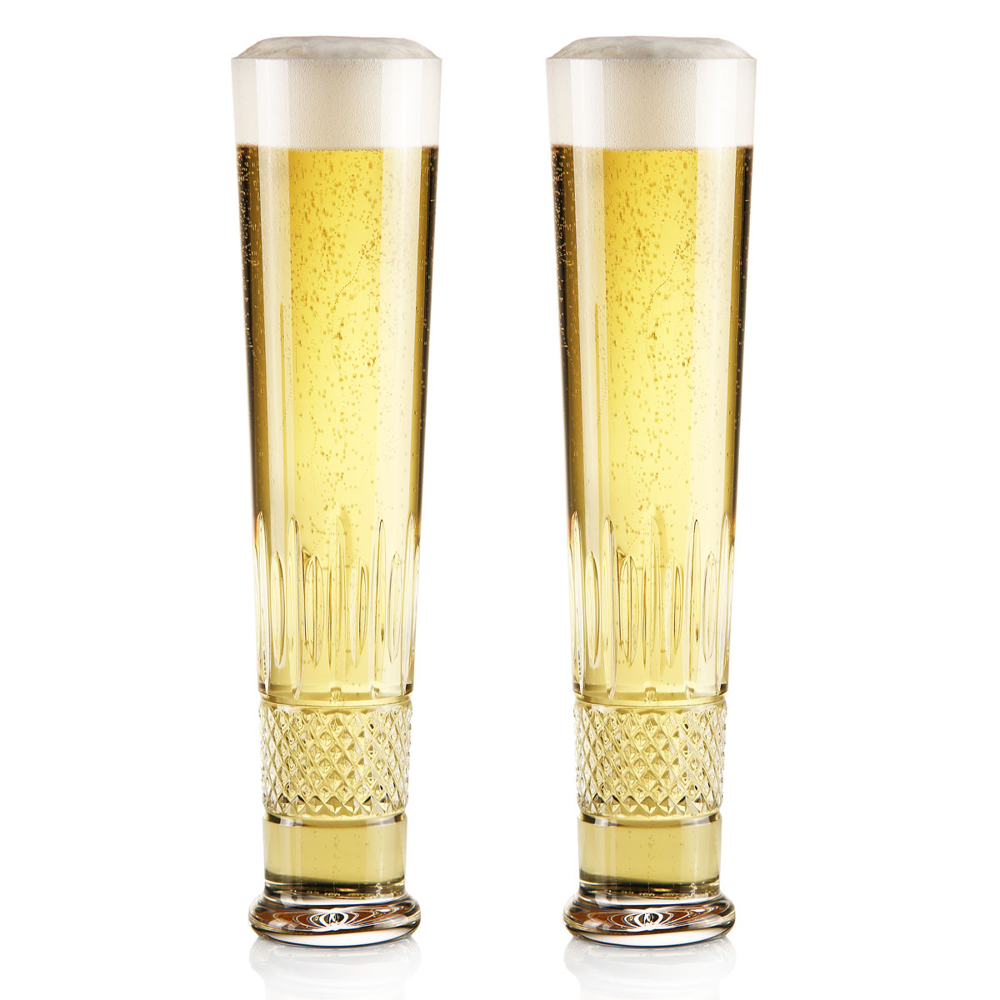

Bohemian Pilsner

Description
The traditional Bohemian Pilsner is crisp, dry, bright, and effervescent with a dense white foam head and hints of diacetyl
Pilsner has shorter history than some beers but has been around for over 150 years now, it remains one of the most popular styles of beer for a reason
Ingredients
Malt
8 lbs Floor Malted Pilsner
4 lbs Chit Malt
8 oz Raw Wheat
4 oz Acidulated Malt
Boil Hops
90 g Czech Saaz
35 g Hallertau Tradition
Dry Hops
30 g Czech Saaz
Yeast
11.5 g S-189 Lager Dry Yeast
Directions
- Mash for 60 minutes at 150*F
- Sparge, ensuring run-off takes approximately 90 minutes netting a kettle volume of 7 gallons
- Boil vigoriously for 90 minutes, ensuring the boil hops are added at the correct times
- Cool wort, knock out at 48*F to allow the yeast to begin fermentation by morning
- After 14 days add the dry hop additions
- Once fermentation is complete crash the beer down to 32*F
- After 2 weeks transfer beer to brite tank for further conditioning
- Krausen brite tank with 1/6 of the volume fresh wort, seal the tank during the ensuing fermentation to allow for Co2 production
- Once carbonated allow yeast to flocculate for 2 weeks then transfer to another brite tank for packaging